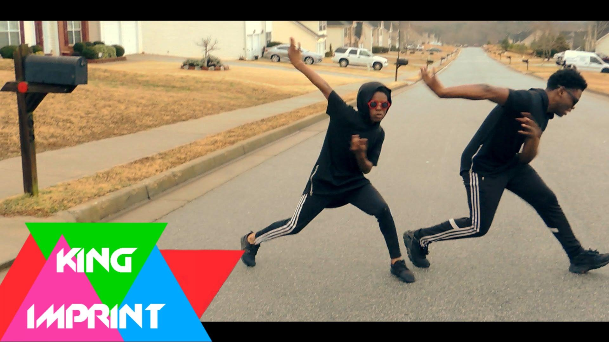
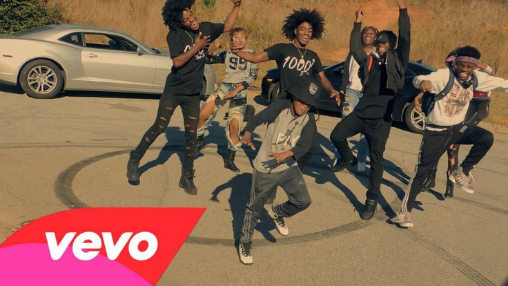

Welcome to Youth Cohort
Our young people have been working diligently for 13 weeks learning how to construct a static website. During this time we have made video games, developed relationships and just had overall fun.
Ali's finale

I picked this picture because they can help you look up the real video

i picked this picture because if you find the (real)video it will teach you how to dance.(hip hop)